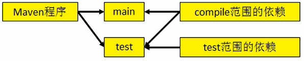
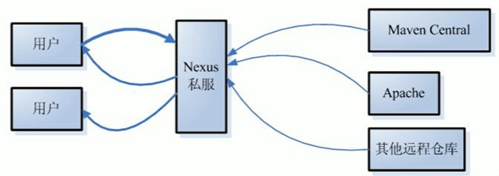

Maven 是一个 Java 项目的自动化构建工具
构建过程
- 清理：将之前编译得到的旧的 class 字节码删除，为下一次编译做准备
- 编译：将 Java 源码编译成 class 字节码
- 测试：自动调用 Junit 执行测试
- 报告：测试的结果
- 打包：Web 工程生成 war 包，Java 工程生成 jar 包
- 安装：将打包生成的文件复制到仓库中的指定位置
- 部署：将 Web 工程生成的 war 包复制到 Web 容器的指定目录中
安装 Maven（见官网 Maven Install）
Maven 的核心概念
坐标
- 使用下面三个向量在仓库中唯一定位一个 Maven 工程
- groupid : 公司或组织域名倒序 + 项目名
- artifactid : 模块名
- version : 版本
- 使用下面三个向量在仓库中唯一定位一个 Maven 工程
-
Maven 解析依赖信息时会到本地仓库中查找被依赖的 jar 包。对于自己开发的 Maven 工程，使用
mvn install命令安装后才能被别的工程引用（这一步的目的是在本地仓库中生成相应文件）依赖的范围
dependency 标签中的 scope 标签设置的就是依赖的范围
可选值如下：
- compile（默认）
- 对主程序是否有效：有效
- 对测试程序是否有效：有效
- 是否参与打包：参与
- 是否参与部署：参与
- provided
- 对主程序是否有效：有效
- 对测试程序是否有效：有效
- 是否参与打包：不参与
- 是否参与部署：不参与
- test
- 对主程序是否有效：无效
- 对测试程序是否有效：有效
- 是否参与打包：不参与
- 是否参与部署：不参与
- system
- import
- runtime

- compile（默认）
仓库
本地仓库
远程仓库
- 私服：架设在当前局域网环境下，为当前局域网范围内的所有 Maven 工程服务
- 中央仓库：架设在 Internet 上，为全世界所有 Maven 工程服务
- 中央仓库的镜像：架设在各大洲，为中央仓库分担流量，减轻中央仓库压力，同时更快的响应用户请求

生命周期/插件/目标
- Maven 生命周期定义了各个构建环节的执行顺序，有了这个顺序清单，Maven 才可以自动化的执行构建命令
- Maven 有三套相互独立的生命周期，分别是：
- Clean Lifecycle : 在进行真正的构建之前进行一些清理工作
- Clean Lifecycle 一共包含三个阶段：
- pre-clean : 执行一些需要在 clean 之前完成的工作
- clean : 移除所有上一次构建生成的文件
- post-clean : 执行一些需要在 clean 之后立即完成的工作
- Clean Lifecycle 一共包含三个阶段：
- Default Lifecycle : 构建的核心部分，编译、测试、打包、安装、部署等
- Default Lifecycle 中比较重要的阶段：
- validate
- generate-sources
- process-sources
- generate-resources
- process-resources : 复制并处理资源文件至目标目录，准备打包
- compile : 编译项目的源码
- process-classes
- generate-test-sources
- process-test-sources
- generate-test-resources
- process-test-resources : 复制并处理资源文件至目标测试目录
- test-compile : 编译测试源码
- process-test-classes
- test : 使用单元测试框架运行测试，这些测试代码不会被打包或者部署
- prepare-package
- package : 接受编译好的代码并打包成可发布的格式。如 JAR、WAR 等
- pre-integration-test
- integration-test
- post-integration-test
- verify
- install : 将包安装到本地仓库
- deploy : 将最终的包复制到远程仓库
- Default Lifecycle 中比较重要的阶段：
- Site Lifecycle : 生成项目报告，站点，发布站点
- Site Lifecycle 一共包含四个阶段：
- pre-site : 执行一些需要在生成站点文档之前完成的工作
- site(常用) : 生成项目的站点文档
- post-site : 执行一些需要在生成站点文档之后完成的工作，并且为部署做准备
- site-deploy(常用) : 将生成的站点文档部署到特定的服务器上
- Site Lifecycle 一共包含四个阶段：
- Clean Lifecycle : 在进行真正的构建之前进行一些清理工作
- Maven 在运行任何一个阶段的时候，它前面的所有阶段都会被执行，这是 Maven 能够自动执行构建过程的重要原因
- 生命周期的各个阶段仅仅定义了要执行的任务是什么，各个阶段和插件的目标是对应的，相似的目标由特定的插件来完成
继承
原因：由于 test 范围不能传递，所以必然会分散在各个模块中，很容易造成版本不一致
解决方案：将相同的依赖（不能传递的）版本统一提取到 parent 中，在 子工程声明该依赖时不指定版本，以 parent 的为准。注意：配置继承之后需要先 install parent
配置方式：
创建一个 Maven 工程作为 parent，注意：打包的方式为 pom
在子工程中声明对 parent 的引用
1
2
3
4
5
6
7
8<parent>
<groupId></groupId>
<artifactId></artifactId>
<version></version>
<!-- 以当前工程的 pom.xml 文件为基准的 parent 中 pom.xml 文件的相对路径 -->
<relativePath></relativePath>
</parent>将子工程的坐标中与 parent 坐标中重复的内容删除
在 parent 中统一管理不能传递的依赖
1
2
3
4
5
6
7
8
9
10<dependencyManagement>
<dependencies>
<denpendency>
<groupId></groupId>
<artifactId></artifactId>
<version></version>
<scope></scope>
</denpendency>
</dependencies>
</dependencyManagement>在子工程中删除不能传递的依赖的版本号部分
聚合
作用：一键安装各个模块
配置方式：
指定一个总的工程，在这个工程中配置各个参与聚合的模块
1
2
3
4<modules>
<!-- 指定各个子工程的相对路径 -->
<module></module>
</modules>
常用 Maven 命令
- 注：执行与构建过程相关的命令时，必须进入 pom.xml 所在目录
mvn clean: 清理mvn compile: 编译主程序mvn test-compile: 编译测试程序mvn test: 执行测试mvn package: 打包mvn install: 安装mvn site: 生成站点
本地仓库默认位置
${user.home}/.m2/repository（例如 Windows 下为 C:\Users\用户名\.m2\repository）。如需修改本地仓库位置，则需要到 Maven 安装目录下的 conf\settings.xml 文件中找到 localRepository 标签内容即可
Eclipse 设置
- Installations : 更改为自己安装的 Maven 目录（不建议使用 Eclipse 自带的）
- User Settings : 更改本地仓库的位置
依赖的传递性
- 可以传递的依赖不必在每个模块工程中都重复声明，在底层工程中依赖一次即可
- 在 compile/test/provided 三个范围中只有 compile 范围可以传递
依赖的排除
- 需要设置依赖排除的场合：排除掉不希望加入工程中的 jar 包
- 设置方式：某个 dependency 标签中加入 exclusions 标签，在 exclusions 标签中填入需要排除的依赖的 groupId 以及 artifactId 即可
依赖的原则
- 作用：解决模块工程之间的 jar 包冲突问题
- 路径最短优先原则
- 路径长度相同时先声明者优先（先声明指的是路径相同的两个 dependency 标签的声明顺序）
统一管理依赖的版本
配置方式：
使用 properties 标签，在 properties 标签内自定义一个标签统一声明版本号（ properties 标签不限于统一版本号的使用 ）
1
2
3<properties>
<defined.version>1.2</defined.version>
</properties>在需要统一版本的位置，使用
${自定义标签}来引用声明的版本号1
<version>${defined.version}</version>
自动部署
1 | <!-- pom.xml 文件中 --> |